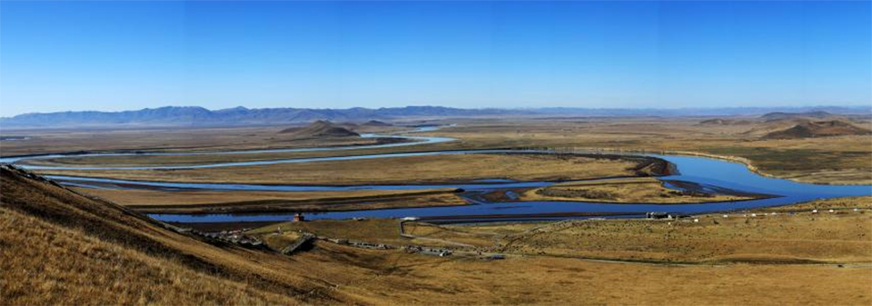

地貌特征
黄河流域西界巴颜喀拉山，北抵阴山，南至秦岭，东注渤海。流域内地势西高东低，高差悬殊，形成自西而东、由高及低三级阶梯。
最高一级阶梯是黄河河源区所在的青海高原，位于著名的“世界屋脊”——青藏高原东北部，平均海拔4000米以上，耸立着一系列北西——南东向山脉，如北部的祁连山，南部的阿尼玛卿山和巴颜喀拉山。黄河迂回于山原之间，呈“S”形大弯道。河谷两岸的山脉海拔5500～6000米，相对高差达1500～2000米。雄踞黄河左岸的阿尼玛卿山主峰玛卿岗日海拔6282米，是黄河流域最高点，山顶终年积雪，冰峰起伏，景象万千。
巴颜喀拉山北麓的约古宗列盆地，是黄河源头，玛多以上黄河河源区河谷宽阔，湖泊众多。黄河出鄂陵湖，蜿蜒东流，从阿尼玛卿山和巴颜喀拉山之间穿过，至青川交界处，形成第一道大河湾；祁连山脉横亘高原北缘，构成青藏高原与内蒙古高原的分界。
第二级阶梯地势较平缓，黄土高原构成其主体，地形破碎。这一阶梯大致以太行山为东界，海拔1000～2000米。白于山以北属内蒙古高原的一部分，包括黄河河套平原和鄂尔多斯高原两个自然地理区域。白于山以南为黄土高原，南部有崤山、熊耳山等山地。
第三级阶梯地势低平，绝大部分为海拔低于100米的华北大平原。包括下游冲积平原、鲁中丘陵和河口三角洲。鲁中低山丘陵海拔500～1000米。
下游冲积平原系由黄河、海河和淮河冲积而成，是中国第二大平原。它位于豫东、豫北、鲁西、冀南、冀北、皖北、苏北一带，面积达25万平方公里。本阶梯除鲁中丘陵外，地势平缓，微向沿海倾斜。黄河冲积扇的顶端在沁河河口附近，海拔约100米，向东延展海拔逐渐降低。
黄河流入冲积平原后，河道宽阔平坦，泥沙沿途沉降淤积，河床高出两岸地面3—5米，甚至10米，成为举世闻名的“地上河”。平原地势大体上以黄河大堤为分水岭，以北属海河流域，以南属淮河流域。
